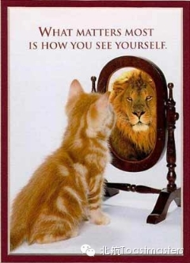

Time: Friday Mar. 7th 19:30-21:30
Venue: Room A212, New Main Building, Beihang University
Toastmaster Peter
General Evaluator Amanda
In a blink of eyes, our winter vacation has come to an end. Once again, we have to leave the sweet home and strive for the new semester`s tasks. As the saying goes, “A bad beginning makes a bad ending”. It`s important for us to make planS at the very beginning: to set achievable goals, select proper courses, and make a comprehensive program for the distant future. This time, we will talk about the new semester`s plans and resolutions.
Table Topic Master Deron
Table Topic Evaluator Peter
Table
topics has always been the most exciting part of the meeting. There
will be creative questions and funny guys in this session. What`s more,
everyone who attend the meeting will have a chance to take part in it
and make a 2 minutes speech. Come on! You are wanted!
Prepared Speech one speaker

How I See Myself
CC1 Monk
Evaluator Jason
There is an old saying depicted in Apollo temple: "Know thyself", which has the same meaning as "Know yourself". It is importance for us to have a clear understanding of ourselves. In this meeting, Monk, our new Vice President Education, will give us his CC1 speech. He will tell us some stories about himself, and let us know better of him. Let`s looking forward for his speech!
/////////////////////////////////////////////////////////
官方微信号【beihangtmc】
提示：长按方括号中的微信号可复制，然后在查找公众帐号时，长按输入框即可粘贴微信号
路线
回复r即可查看路线地图